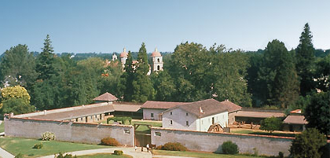

This mueseum covers the history of California as it is in Sacramento, the capital of the state. Visitors can tour the restored historic offices of the Secratary of State, Treasurer, and Goverener of the state of California.
Sutters Fort is the historic park locatted in Midtown Sacramento. It captures the pioneer spirit of arriving in the wagon trains during the Great California Gold Rush. It is a fascinating place to visit for field trips, kids and adults .
Located at the base of the Sierra foothills, the lake and recreation area offers opportunities for hiking, biking, running, camping, picnicking, horseback riding, water-skiing and boating. It is great for an active day in Sacramento!
